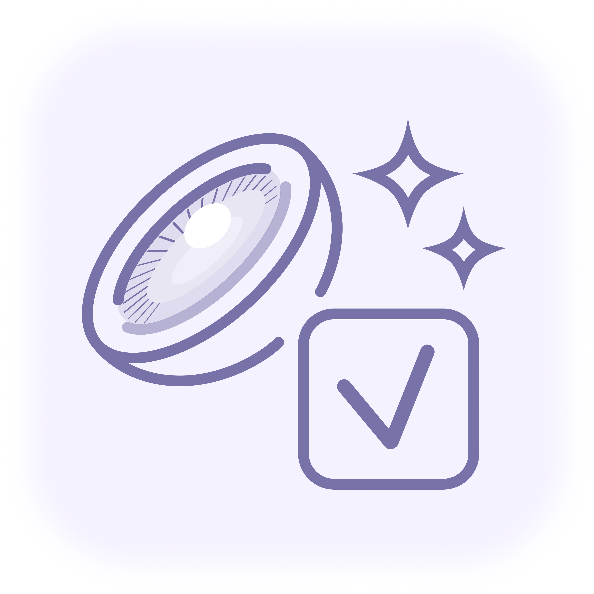
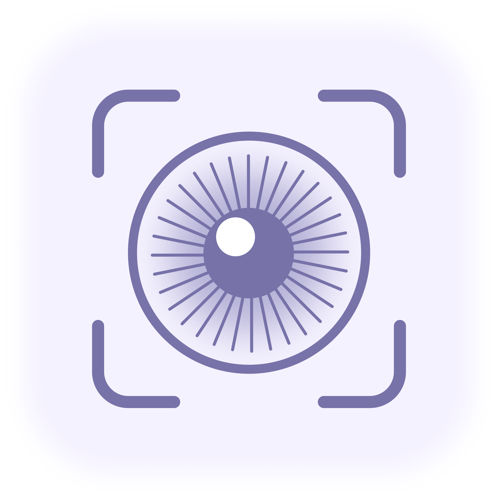
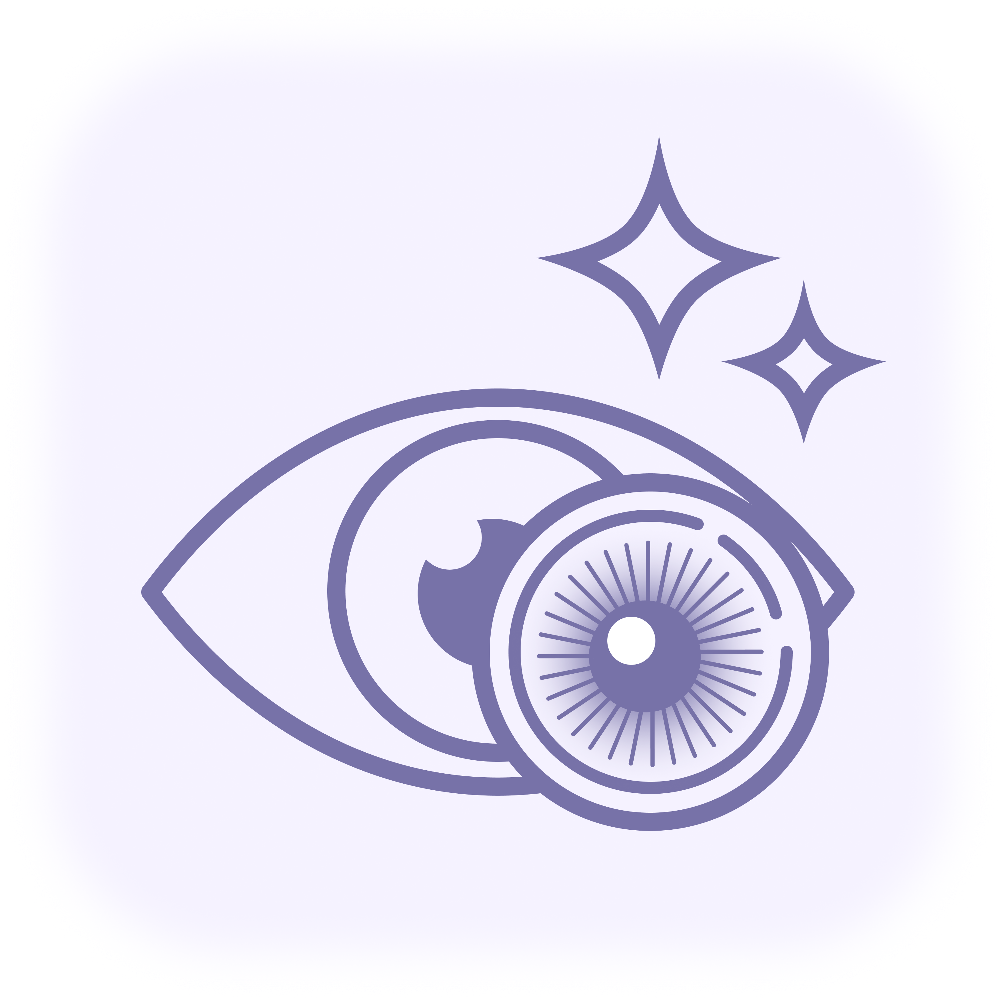

LPTI 취향 테스트
LPTI 취향 질문으로
나의 렌즈 스타일을 찾아보세요
LENSIA AI KIOSK
LPTI 취향 질문과 AI 이미지 분석을 통해 나에게 어울리는 렌즈 성향 유형과 맞춤 렌즈를 추천해 드립니다. LPTI 취향 질문과 AI 이미지 분석을 통해 나에게 어울리는 렌즈 성향 유형과 맞춤 렌즈를 추천드립니다.


LPTI 취향 질문으로
나의 렌즈 스타일을 찾아보세요

홍채 컬러와 얼굴 이미지를 분석해
나에게 어울리는 렌즈를 추천해 드려요

추천 렌즈를 AR로 착용해 보고
나에게 어울리는지 확인해 보세요
취향 질문 선택
→ 02AI 이미지 분석
→ 03LPTI 결과 확인
→ 04렌즈 추천·가상 착용
LPTI TEST
QUESTION 01
IRIS ANALYSIS
눈 이미지 분석을 통해 홍채 컬러와 눈동자 비율을 확인하고
나에게 더욱 잘 어울리는 렌즈를 추천해 드려요.
정면에서 촬영한 선명한 눈 사진을 사용하면
더욱 정확한 분석 결과를 확인할 수 있어요.
아직 선택된 이미지가 없어요.
카메라로 촬영하거나
이미지를 업로드해 주세요.
잠시만 기다려 주세요.
눈을 정면으로 바라보고 홍채가 선명하게 보이는 이미지를 사용해 주세요.
눈동자 색이 선명하게 보이는 환경이 좋아요.
카메라를 바라보고 눈을 자연스럽게 떠 주세요.
뷰티 필터와 컬러 보정은 분석 결과에 영향을 줄 수 있어요.
부담 없는 확대감과 따뜻한 컬러가 어우러진 데일리 렌즈가 잘 어울려요.
따뜻한 인상을 살리는 자연스럽고 맑은 브라운
반짝이는 글리터와 부드러운 베이지 컬러의 조화
데일리로 착용하기 좋은 차분한 밀크 브라운
VIRTUAL TRY-ON
정면에서 촬영한 선명한 사진을 사용하면 더욱 정확한 분석 결과를 확인할 수 있어요.
○ 아직 선택된 이미지가 없어요.
카메라로 촬영하거나
이미지를 업로드해 주세요.
가상 착용을 원하는 제품을
선택해 주세요.